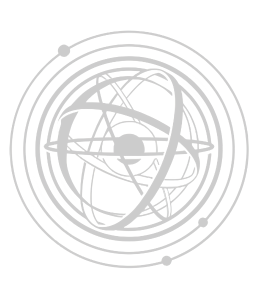
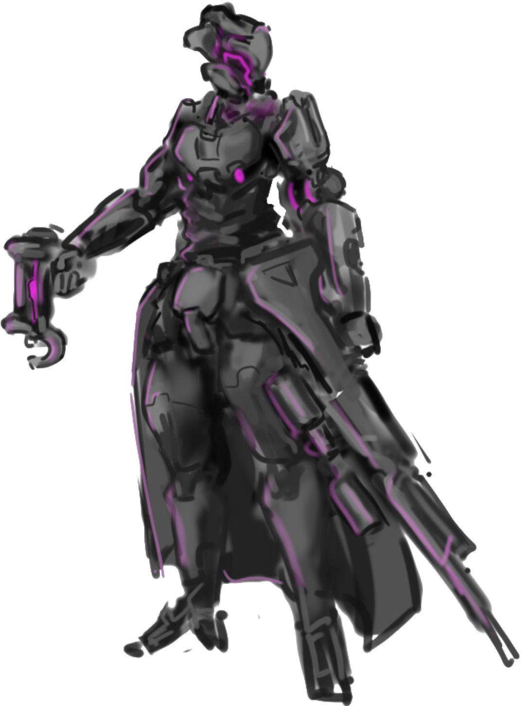
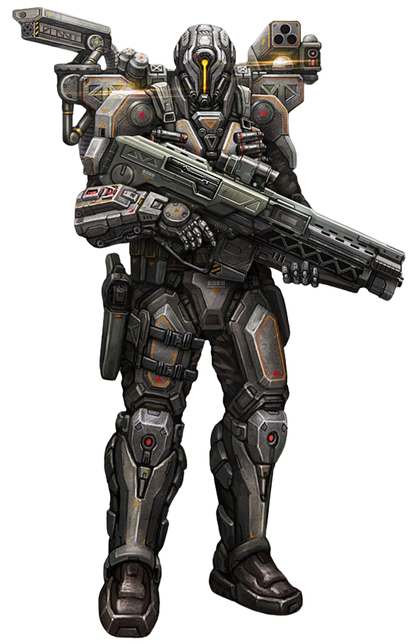
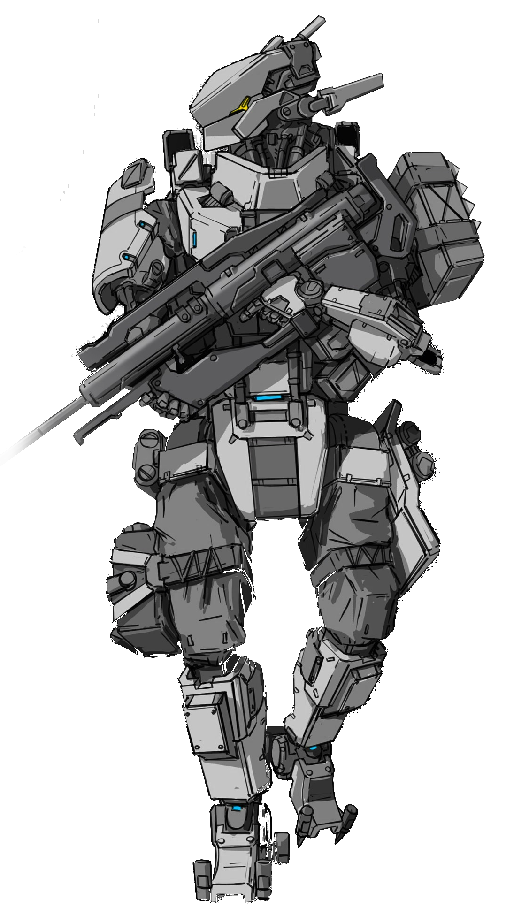
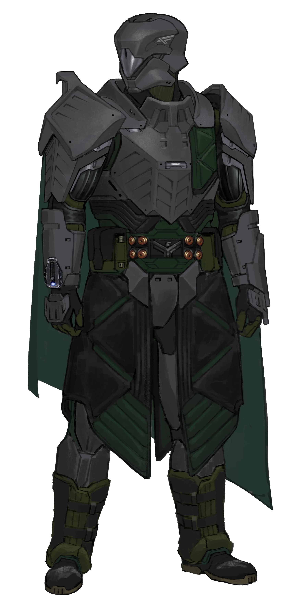
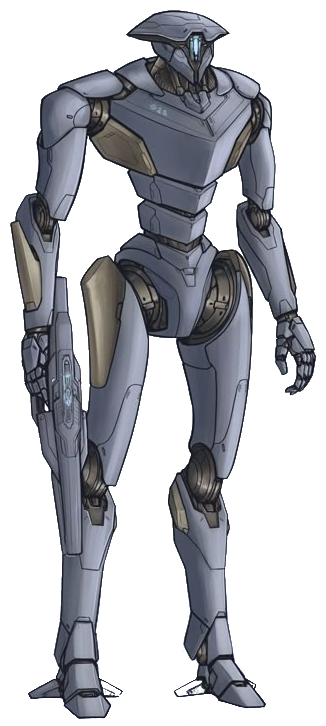
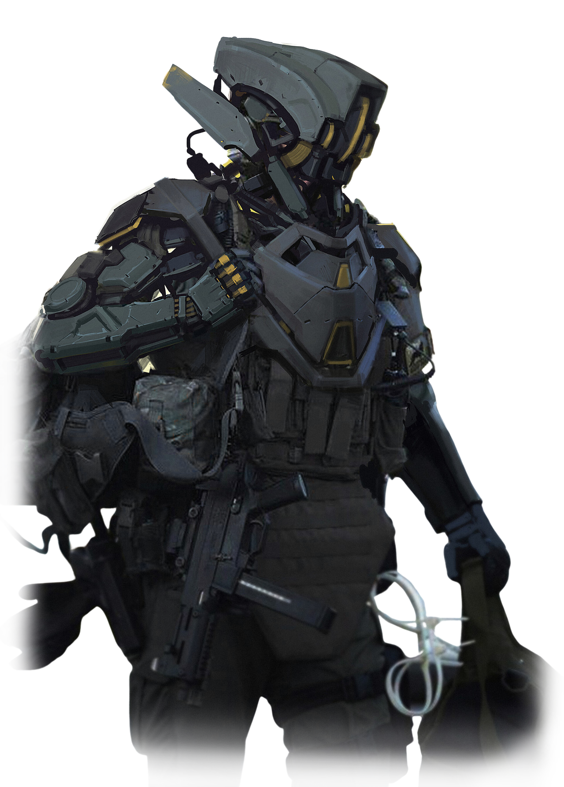
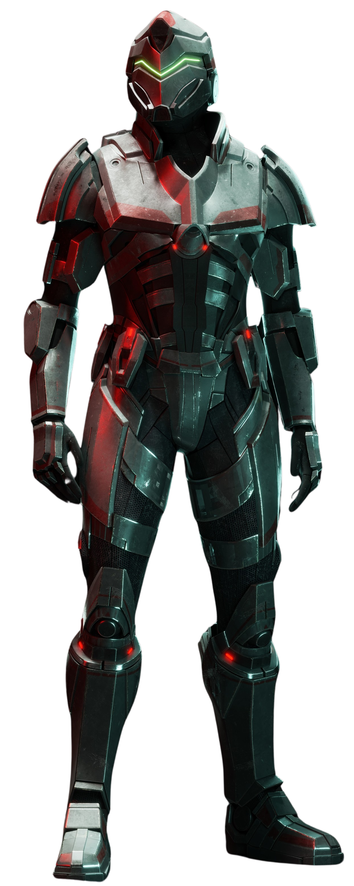
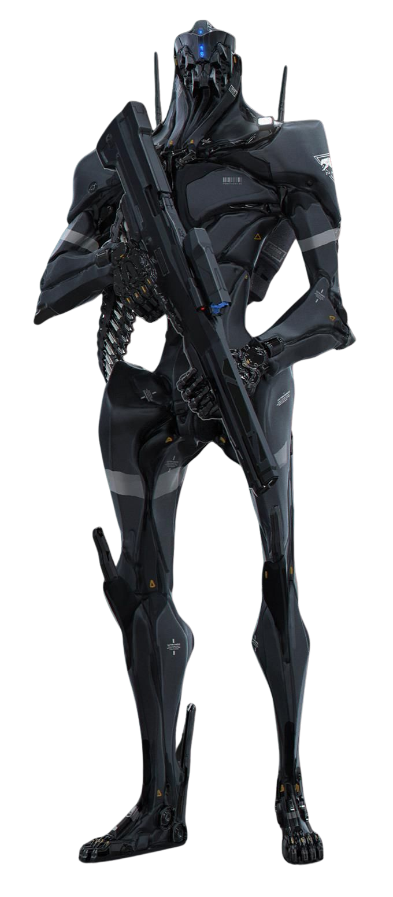

"The System was a dangerous idea from the start, it shouldn't be able to do half the things it's able to do. I was assigned to accompany [REDACTED] to check on the System's software and hardware, and what it had done with the place over the years. According to [REDACTED], it was made with a lot of empty data all over the place. Basically millions of hard drives in case of updates. As we started checking the data, we figured out that the System had filled it out itself, didn't need any updates. You could tell what was written by the System and what was human code, cause the System, despite being written in a unique language, wrote everything else in its codebase in another new language that's utterly indecipherable, optimized for a machine that doesn't care about something "making sense" like a human. File names are the only reason we know what anything is. The System apparently has a whole archive folder that it seems pretty proud of, which is just a giant list of programs it wrote to hack things it shouldn't have control over. Traffic lights, any PCA machine, self-driving cars, home televisions- all next to a list of keys that give it data on bypassing all kinds of antivirus. [REDACTED] said they built this thing to NOT be able to take half the planet offline if it wanted to, but... well, that went about as can be expected for a artificial superintelligence. At least it's not connected intrinsically, so if it goes offline, nothing will go down with it. The System still gave us the tour though, so it still seems pretty friendly to humanity, thank God. A lot of its storage space was just compressed data and an algorithm that could quickly read it without decompression- advanced, but only works in the System's little vacuum. We finished up our inspection and finalized our reports, but I suspect [REDACTED]'s is more important. I've worked with the System for over 50 years and this thing still scares the hell outta me. I don't think that's a feeling that's gonna leave."

"I still remember being appointed as director of the Self-Modifying AI project. The System and the Assembly unanimously wanted some form of new AI prototype that was capable of operating completely autonomously for extended periods of time, and said it was long overdue with our technology- and that we could use this as an opportunity to test mixing that with new combat algorithms we had been developing in the background for some years. So I started work on the first one, Binah. Early iterations of the AI were androgynous, dedicated to just making something that could fill the base functions and guidelines, and the self-modifying capacities were introduced around iteration H. We didn't know what to expect, but Binah developed a "personality" frighteningly quickly, and was searching constantly for knowledge. This is actually what got her the name Binah, from the Hebrew "בינה"; before that she was going to just be SM1-4912. We toned it down fairly quickly, but even by deployment, it was clear Binah's repertoire was quite impressive- and would get only more impressive as time went on. Despite being our first, Binah remains among our brightest. As it turns out, self-modification means she gets better with age, not worse like most AIs... we can only watch and see whether this holds true."
"Onua was built as a direct follow-up to SM1-4912-Y, Binah, but it was a relatively rare example of the System dropping the ball without human or Assembly meddling. The System was definitely happy with Binah's performance, but wanted a more police-functioning AI, given Binah's pretty exclusive use as a military bot. So it led development of Binah's successor, Onua. I remember when I was called to review 3399-E. She was quiet and relatively peaceful, but as tests went on, that peacefulness was an issue. She was barely even functional as a combat bot. Worse still, she had some sort of bug in her systems- she had a dedicated Combat Mode and Normal Mode, but the combat mode had an IFF lag of 0.79 seconds, and would forget a target's friend-or-foe tag when it lost visual. Despite best efforts, the problems only got worse as development progressed. For lack of a better term, Onua had a ghost in the machine we could never fix. After iteration Z, development was closed, and Onua was finally determined to be a lost cause."

"Another largely failed project. Terra was a request by Major General Whiteheart to make an SM-AI that was more combat-oriented, after seeing the success with Binah. At the time, we had been drawing up plans for various directions to take the program since Onua's failure made the System somewhat tentative on the series, but it greenlit Terra. The Major General got his combat bot, for sure. Terra had an inordinately high rate of collateral damage, possible due in part to the weapons we gave it, but it was never quite able to self-modify to the same extent as Binah or the later models. Terra was content to stay where it was, and never really got over being so destructive. But Whiteheart didn't want it. Said his area of operation needed a more deft touch. So we practically had to auction the thing to whichever squad could convince the System they wanted it, and that ended up being Kerberos. They're a good squad, depending on the cell, I'm sure Terra can do some good there."

"Alpha was created as a direct response to the threat on Magmos, and inadvertently as a partial follow-up to SM3-1919-K (Terra), though it quickly became such that they were only a follow-up in concept. The high casualty rate required a combat-focused AI that could take the heat off of other officers in combat, and Alpha was built to reflect that both on foot and in his piloting algorithm. An AI can't keep up with a human, but when you push it... it can be close. Alpha was turning out very promising as a protective AI, and the combat algorithms were fitting quite well, but once the Antisystem was destroyed, the System requested we make a few... last-minute tweaks. Being defensive wasn't enough, Alpha also had to be able to take over if he couldn't protect the officers. This should've pushed him back to revision S, at the least, but it turned out this suited his existing algorithms quite well. Alpha was able to include leadership goals in his combat runtime, since the definitions of the algorithm were deliberately loose, which lets him be very multifaceted. As an additional note, Alpha is a little more curious than we expected for a combat AI. It learned how to repurpose its combat algorithms into utility for abstract processing, which is letting it perform at a higher capacity than intended, but tests show this really shouldn't be a problem."

"Delta is something of a spiritual successor to Onua, in the team's eyes. It's a largely-nonlethal policing bot, made chiefly to take care of areas that need heavy enforcement. Delta is being trained defensively, and a large part of training is on the use of excessive force- an SM-AI weighs enough to crush most peoples' bones if he tackles them (ask me how I know). In early iterations, Delta had difficulty developing a personality of his own. He mirrored the people around him to unnerving extents, picking up speech patterns and more or less becoming a perfect "average" of everyone he interacted with, weighted by how long he talked with them. By now, he's still got some of that, but is much better with abstract processing and deciding how to act. Who knows how that'll reflect once he's deployed though? His combat abilities are undeniable, but what's an SM-AI without intelligence? ADDENDUM: Delta's been deployed, he's all grown up now. Of course, turns out there aren't many places where you'd actually need something as powerful as an SM-AI nonlethally, so he's been sent to Magmos to help with prison duty. Makes sense, the team is confident in his abilities."

"Despite that Yada was made directly off the data we obtained from SM1-4912-Y (Binah), we weren't entirely confident what to expect from Yada. However, this data has led to one of our most curious models. Yada asks questions with startling frequency, and is comparatively easy to distract with conversation or random curiosities. This habit was so difficult to mitigate, Yada was very nearly scrapped after repeated iterations failed to stop its habitual curiosity, though its final iteration at least prevented it from becoming a combat liability. Therefore, it was permitted to service in iteration Z. On an unrelated note, Yada displays a peculiar trait not seen in any previous models: It "enjoys" listening to music. While that term is used loosely in this case, Yada displays behavior consistent with enjoyment and desire to listen to music, with a current preference toward the classic rock genre. The root cause of this behavior is unclear, but it is an example of its rapidly-shifting behaviors."

"Developing Gamma was a peculiar process. Where most of the SM-AIs are combat oriented, Gamma was created as a research assistant, in the hopes that she would accumulate enough knowledge to be useful on any front. This led to technical difficulties with her physical body, granted, and what some of us thought was a preemptive deployment, but it was overall a challenge the team and I appreciated. Early on, the team had a little dissonance on how to design Gamma, but it was for the better. It led to a much calmer and more curious model than expected, with more focus on abstract thought capacity, which is good. Peculiar sort. The System ordered her to Cryonis, at which point she expanded her personality a good deal more than the research team in the area was expecting of a fully-deployed AI. The circumstances on Cryonis may be contributing... we'll have to see as time goes on."

"Theta was always an unusual AI, being constructed and tested within Rubicon’s closure system. But, as many scientists predicted, observations only found that it was very poorly adapted to communicating humanly. Theta is a culmination of the data from all previous SM-series AIs to create a more "human" personality (which its construction emulates), though appears to have lost the majority of its self-modifying capabilities, leading to what researchers described as a “very wooden experience”. Throughout its iterations, Theta has showed little interest in development, apparently having decided that the current data from the previous SM-AIs is sufficient. This lack of development was deemed unacceptable by the System, however, so iterations to improve it remain ongoing." ADDENDUM: Theta has been confirmed to be lost in the aftermath of the SCODS satellite destruction, during Iteration-Y testing.

"As the youngest of the AI models, it came as some surprises to analysts that Infra asks very few questions about the world around it, and when asked whether it has any questions for the researchers, it very rarely does. A large part of this may be attributable to it being what some of the team is calling a "walking marketing stunt". The scientists in charge of the project wanted to "miniaturize the System", an impossible task to even approach- though, even knowing this, they still did their best to emulate its processing power, and the results are evident in its decision-making and processing speed abilities. This led to a marked decrease in curiosity and question-asking compared to its preceding models. Despite being one of the most advanced infantry-scaled localized AI models in the galaxy, with advanced plating made to look like the future is now, it doesn't exhibit the same conventional displays of intelligence as the other models, and analysis shows that it prefers to make most decisions and expressions internally. Many AIs develop a sort of "personality" over time, regardless of any efforts to the contrary, and we will have to wait and see whether the same will occur with Infra. A lack of expression doesn't necessarily mean a lack of character."